Fei Yuan
PHY982 Project
2015-05-05
With partial wave decomposition:
\[\left(-\frac{1}{2 \mu} \frac{d^2}{d R^2} + \frac{l (l + 1)}{2 \mu R^2} + V(R)\right) u(R) = E u(R)\]
What kinds of solutions would you expect?
(of course, they only exist if the interaction is sufficiently attractive)
(a.k.a. "continuum states")
one of the main topics of this class
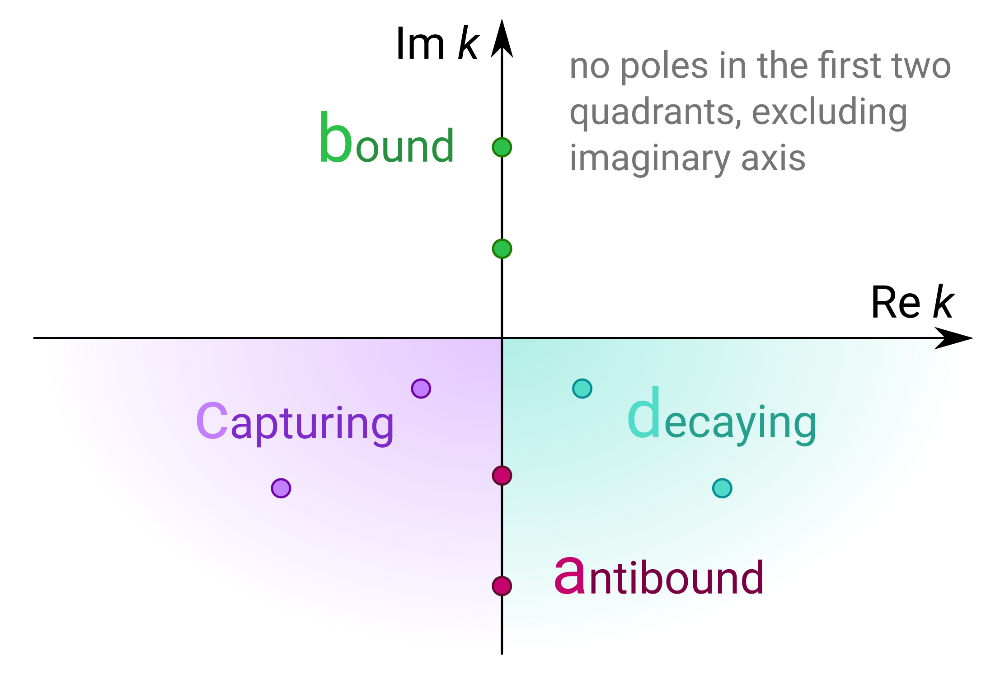
any state is a linear combination of bound and scattering states
\[\sum_{k \in \text{bound}} |\varphi_k\rangle \langle \varphi_k| + \int_0^\infty k^2 d k\, |\varphi(k)\rangle \langle \varphi(k)| = \hat 1\]
but what about resonance states?
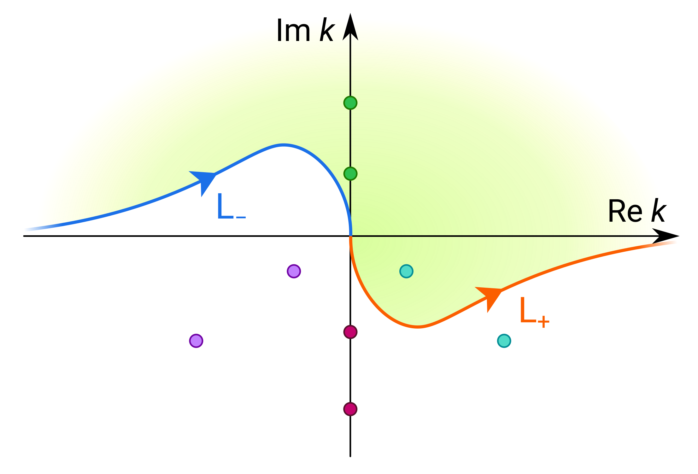
\[\sum_{k \in \text{enclosed b+d}} |\varphi_k\rangle \langle \varphi_k| + \int_{\mathrm L_+} k^2 d k\, |\varphi(k)\rangle \langle \varphi(k)| = \hat 1\]
The discrete sum is over all the poles enclosed by the contour on the upper half plane, which includes bound and resonance states.
What do we get?
What's the price?
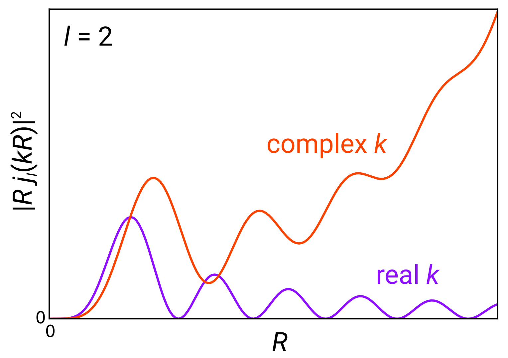
Let's find the Berggren states of the 11Be system studied in homework 1.
We will use basis expansion and we will solve this in momentum space (which is quite natural for Berggren states).
(can be derived by taking a Fourier transform)
\[\frac{k^2}{2 \mu} \varphi(k) + \int_0^\infty \kappa^2 d \kappa\, V(k, \kappa) \varphi(\kappa) = E \varphi(k)\]
where \(V(k, \kappa) \equiv \frac2\pi \int_0^\infty R^2 d R\, j_l(k R) V(R) j_l(\kappa R)\)
\[\frac{k^2}{2 \mu} \varphi_k + \sum_\kappa \kappa^2 w_\kappa V_{k \kappa} \varphi_\kappa = E \varphi_k\]
Points may be chosen via a quadrature scheme with weights \(w_\kappa\).
We'll use Gauss-Legendre here.
which we can plug into Lapack or something
\[\sum_\kappa H_{k \kappa} \varphi_\kappa = E \varphi_k\]
where \(H_{k \kappa} = \frac{k^2}{2 \mu} \delta_{k \kappa} + \kappa^2 w_\kappa V_{k \kappa}\)
Just do a Hankel transform:
\[u(R) = i^l \sqrt{\frac2\pi} R \sum_k k^2 w_k j_l(k R) \varphi_k\]
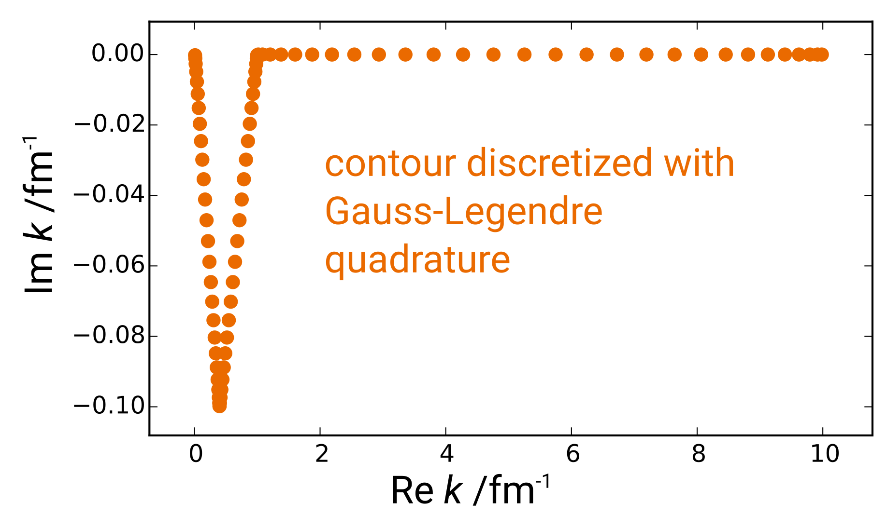
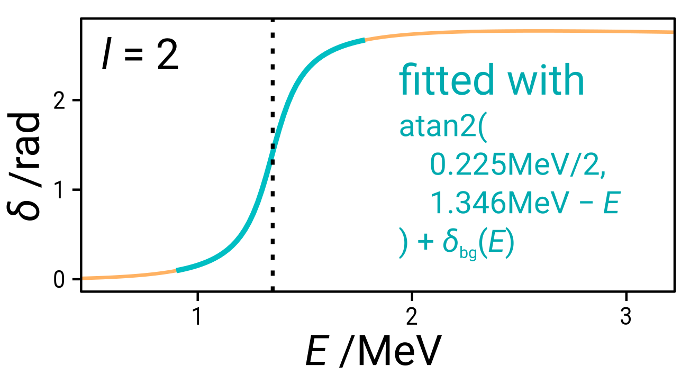
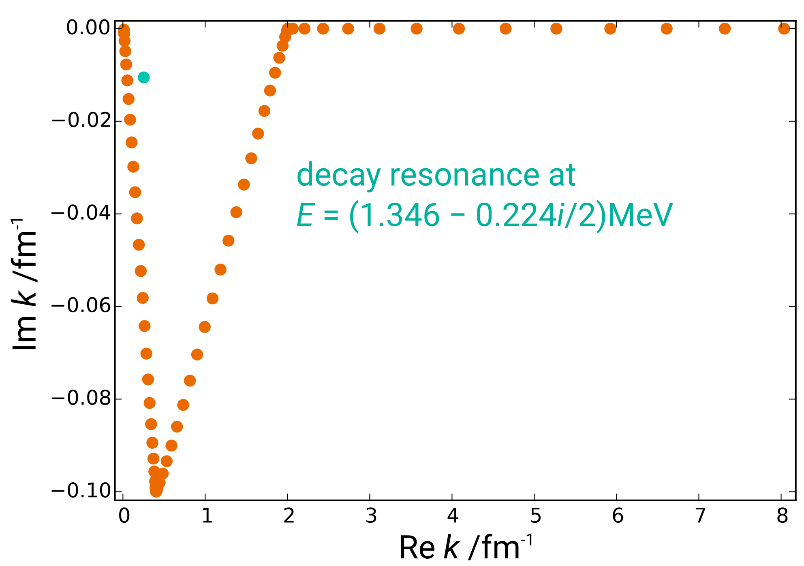
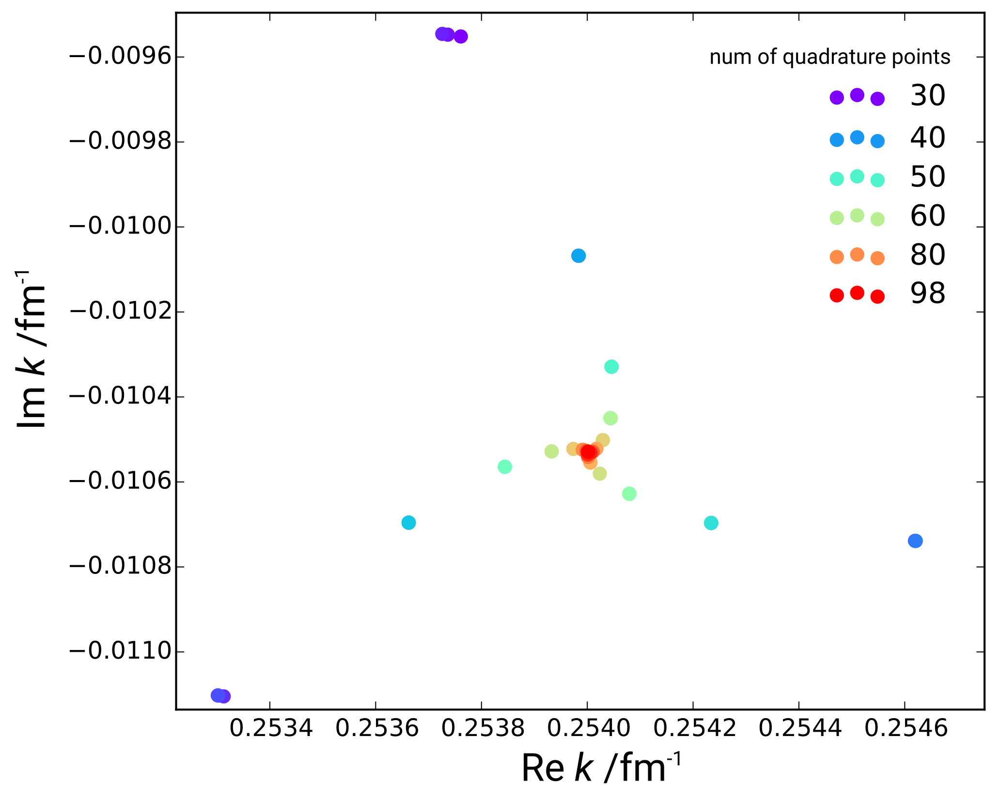
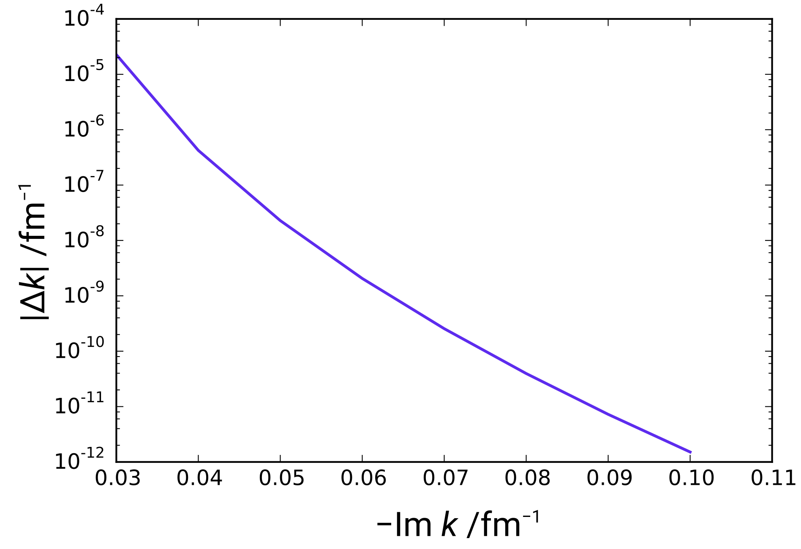
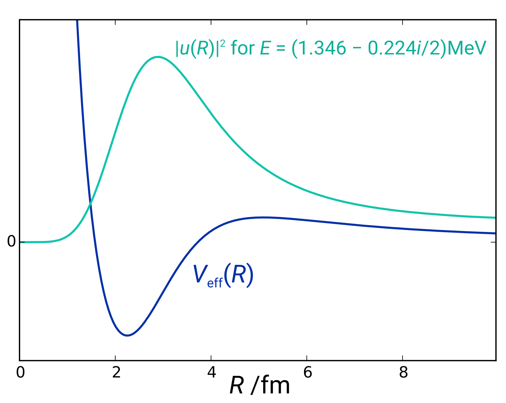
(in \(l = 0\))
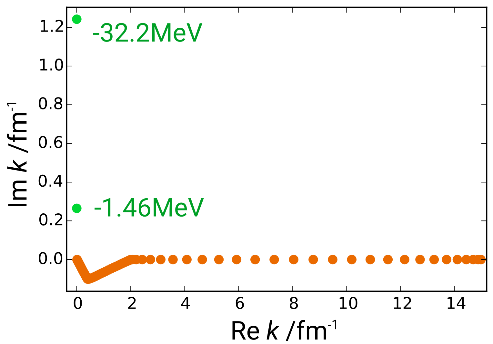
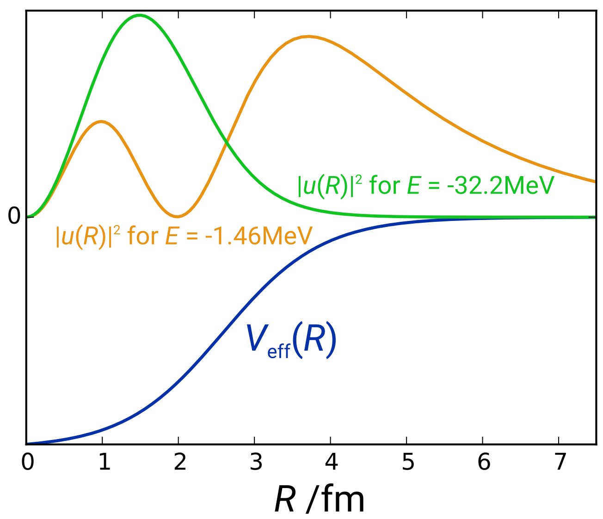
How do the states behave asymptotically? Accurate asymptotics seems to be hard to obtain in this approach. Might require a lot more points.
How can we do this more efficiently? Calculating the momentum matrix elements of \(V\) is the dominant expense. It gets worse as the momentum increases: the integrals become extremely oscillatory.